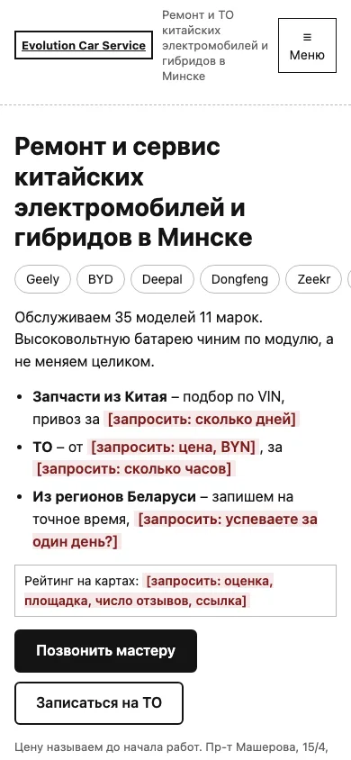
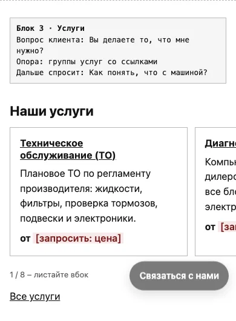
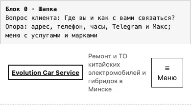

Бриф для одного видео готов, старые замечания прототипа исправлены, дизайну переданы тексты первого экрана
1. Бриф: один разговор закрывает все 4 247 пустых мест на сайте
Ссылка для клиента: tema-mail.github.io/razbory/evolution-minsk-brif-video-cd67a376. На странице голосом объяснено, как записывать.
- На 136 страницах прототипа 4 247 красных меток, разных – 363. Все разложены по 19 вопросам для видео и 6 файлам. Скрипт проверил: неразложенных 0.
- Девять сцен в порядке разговора:
- владелец: о сервисе, гарантия, запчасти, регионы, цены, первый экран;
- мастер: батарея в кадре, марки и модели, как проходит работа.
Около 70–90 минут, можно в два захода. - Номер вопроса – вслух. Расшифровка разложит ответы по страницам сама. - Больше всего мест закрывают: - цены и время – 1 580; - отзывы и рейтинг с карт – 824; - часы работы и ссылки на Telegram и Макс – по 267; - марки и модели – 266. - Цены можно не говорить, а прислать прайсом. В брифе готовые таблицы: 16 услуг и 35 моделей. - Файлами, не на видео: ссылки, реквизиты, ссылка на карты с разрешением на отзывы, фото, кто согласится на видеоотзыв, выгрузка статей старого сайта. - Сделаем сами: юридические тексты, оценку и отзывы с карт. - Приложение для мастера – вопросы по каждой из 35 моделей из паспортов: регламент, батареи, частые поломки, вопросы владельцев. - Технические вопросы (домен, реклама, доступы) в видео не вошли – пришлю отдельным списком.
В проекте: docs/brif/2026-11-16-video-brif.md. Пересчёт, сколько мест осталось: docs/brif/metki-po-voprosam.py.
2. Старые замечания прототипа исправлены – проверка проходит на всех типах страниц
| Было | Стало |
|---|---|
| Длинные блоки на телефоне в 2 экрана: марки, услуги, «Почему сюда», особенности модели, отзывы | Лента вбок: видно край следующей карточки, под лентой «1 / 8 – листайте вбок». Ставится сама на любой блок с 3 и больше однородными карточками |
| «Связаться с нами» наезжала на кнопку первого экрана | Нижняя панель и «Связаться с нами» появляются, когда первый экран ушёл вверх (правило мобилки) |
| Подпись в шапке 11,5 px | 13 px |
| Надзаголовок «Видеоотзывы клиентов» без ключа | Заголовок «Видеоотзывы клиентов о нашей работе», без надзаголовка |
Проверка: proverka.mjs – PASS на 14 типах страниц из 14 (было от 1 до 3 FAIL на каждой). Снимки 390 px смотрел глазами.
Живой адрес: прототип обновлён, /design/ на месте.



3. Дизайн главной: вид с Фигмы, тексты первого экрана – по правилу
Твоё «да» понял так: макет из Фигмы остаётся, тексты меняем по правилу.
Чат дизайна сейчас сам переделывает первый экран: в 19:49 появилась новая картинка. Если править параллельно, мы перезапишем друг друга. Поэтому передал ему задание напрямую:
- H1 – по SEO-заданию;
- надзаголовок «EVOLUTION CAR SERVICE / МИНСК» – убрать;
- подзаголовок – одна фраза вместо перечня с длинным тире;
- главная кнопка – «Позвонить мастеру»;
- все 11 марок по спросу.
Проверка задана той же proverka.mjs. Он должен ответить строкой «сделано». Пока ответа нет – не проверено.
Нужно от тебя
- Отправить бриф клиенту и назначить видео (можно на meet.deford.ru, будет расшифровка). Запись или расшифровку – мне, разложу ответы по сайту.
- Глянуть первый экран дизайна, когда чат дизайна ответит.
Затрачено на этот шаг – около 1,5 ч.
Что раскрыть
- Какие ещё блоки стали лентой на других типах страниц.
- Как после видео ответы попадут на сайт: номер вопроса → поле данных → страницы.